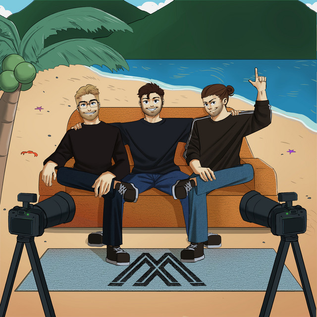

Black Mango Podcast
Fan Page · no oficial
Un espacio de fans dedicado al Black Mango Podcast: conversaciones, historias y momentos que merecen quedarse grabados.
Ver episodiosEpisodios
97 episodios, con enlace directo a Spotify.
Sobre el podcast
Texto de presentación pendiente de completar con la descripción real del Black Mango Podcast.